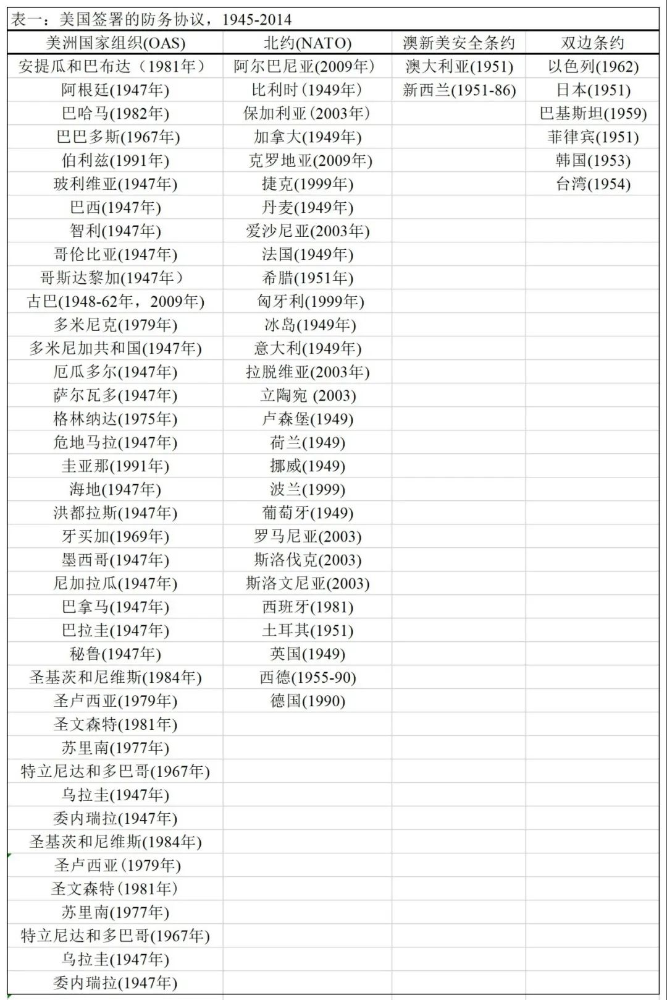
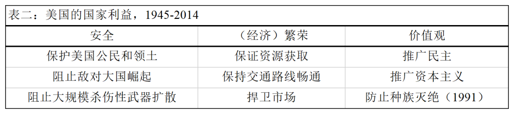
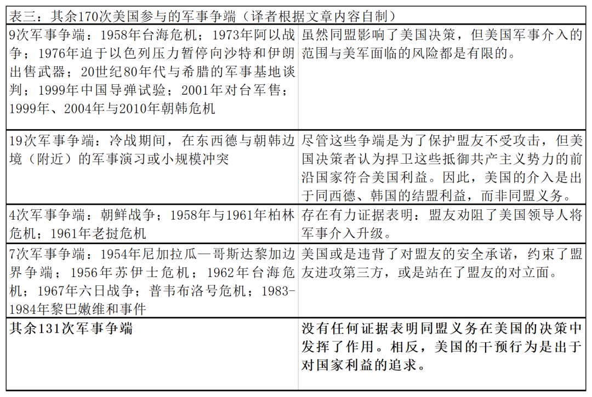

收录于合集

作品简介
【作者】 Michael Beckley，塔夫茨大学政治学助理教授，主要研究兴趣为国际安全与中美关系，曾就职于哈佛大学肯尼迪政府学院、美国国防部、兰德公司与卡内基国际和平基金会等。
【编译】 李源（吉林大学公共外交学院）
【校对】 任潇依
【审核】 杨稚珉
【排版】 王欣月
【美编 】聂涵琳
【来源】 Beckley, M. (2015). The myth of entangling alliances: reassessing the security risks of U.S. defense pacts. International Security, 39 (4), 7-48.
期刊简介
《国际安全》（International Security）是经过国际和国家安全领域同行评议的顶级学术期刊，其刊发的论文主题广泛，涵盖战争与和平等传统安全问题与环境、人口、人道主义、恐怖主义等时新的安全议题。它创刊于1976年，由哈佛大学贝尔弗科学与国际事务中心（Belfer Center for Science and International Affairs at Harvard University）编辑，麻省理工学院出版社（MIT Press）出版，每年四期。根据Journal Citation Reports显示，该杂志2019年影响因子为5.432。
同盟纠缠的迷思：
重评美国防务协议的安全风险
The Myth of Entangling Alliances: Reassessing the Security Risks of U.S. Defense Pacts
Michael Beckley
内容提要
很多文献认为，同盟会使美国卷入本可避免的军事冲突中。然而，自1945年以来，美国被纠缠(entanglement)的潜在案例只有5个：1954年与1995-1996年台海危机、越南战争，以及20世纪90年代美国对波斯尼亚和科索沃的干预。美国被纠缠的案例是很少的，这是因为美国作为一个拥有众多盟国的超级大国可以通过一系列方式避免被卷入冲突中，包括：利用同盟条约中的漏洞、规避严重损害自身利益的承诺、维持庞大的同盟网络，利用同盟阻止对手和盟友发起或扩大冲突等。
本文共分为五个部分：第一部分对同盟中的纠缠(entanglement)现象进行界定。第二、三部分分别阐述了纠缠理论(entanglement theory)与行动自由理论(freedom of action theory)，前者解释了同盟如何将国家拖入战争，后者探讨了大国如何避免被纠缠。第四部分进行了案例检验，对美国参与的所有国家间军事争端(MID，共188次)进行了总结，并分别讨论了5个美国被纠缠的潜在案例。最后，作者探讨了研究结果对美国外交政策的影响。
01
何为纠缠
纠缠的本质是对同盟的忠诚压过了本国利益：一国出于对道德、法律或声誉的考虑，不顾自身国家利益，甚至以牺牲本国利益为代价维护同盟承诺而被盟友拖入军事冲突。 许多学者将这种现象称为“牵连”。然而，金同非(Tongfi Kim)认为，“牵连”这一术语仅意指一国为将其盟友拖入争端而主动挑起与第三方的冲突。他强调“牵连”只是“纠缠”这一更广泛现象的子集。
作者将纠缠概括为四种形式：
第一，一国迫于同盟义务而在冲突中支持其盟友。 这种形式的纠缠涵盖两种情况：一是牵连；二是尽管盟友没有进行挑衅但仍遭到攻击。
第二，一国为维护自身作为安全保障者(security guarantor)的可信度而介入冲突， 即使其盟友并未卷入其中。这种情况下，该国并非是为了捍卫其盟友，而是为了展示自己为别国使用武力的决心从而安抚(reassure)盟友。
第三，由于同盟关系的存在，一国扩大了本国利益的界定范围。 例如，一些学者认为，由于美日同盟的缔结，美国决策者将为日本争取东南亚的资源与市场纳入了美国国家利益的考量范围，最终加速了美国在越南的军事介入。
第四，一国因缔结同盟而将自身置于其他国家的对立面。 例如，一些学者认为，美以事实上的同盟关系使美国处于一些中东国家的枪口下，从而增加了美国被攻击的可能性。
这些纠缠的共同点在于： 一国均因同盟关系而卷入一场有悖于其国家利益的冲突中。 因此，为了发现一国被纠缠的实例，学者首先必须确定该国的国家利益，其次将服务本国利益的行动与旨在维护同盟的行动加以区分。同时，纠缠这一概念还依赖于对结盟(alignments)与同盟(alliances)的区分。结盟是国家间利益契合的产物，它随着彼此利益的改变而趋于加强或瓦解。而同盟则源于国家间进行军事合作的正式条约，即使在彼此原有利益基础消失甚至利益发生冲突的情况下，同盟关系往往也持续存在。例如，虽然美国与巴基斯坦在很多问题上存在利益冲突，但它们仍维持着同盟关系。而美国—沙特阿拉伯却正好相反。作者强调，只有当一国为了维护正式的同盟承诺，而非出于对结盟利益的考虑时，纠缠才会发生。
02
**
**
纠缠理论：
同盟如何将一国拖入战争
本部分阐述了同盟将一国拖入战争的四种机制：
第一，声誉(reputation)。 根据纠缠理论，一国违反同盟条约会破坏其国际承诺的可信度。因此，同盟承诺不仅揭示并影响着现有利益，而且会通过产生声誉成本(reputation cost)创造新的利益。对声誉的考量会促使各国在边缘地区为微不足道的利益投入战争。
第二，社会化(socialization)。 同盟可以通过社会化进程塑造国家的军事政策。盟国间通常会定期举办会议、进行军事演习和展示团结等。随着时间的推移，这样的社会互动可能会鼓励国家接纳对方的利益，并将集体防御等同盟规范内化。
第三，激怒对手(provocation)。 同盟可能会激怒对手，从而使国家卷入有悖于其国家利益的冲突中。这一观点的逻辑源自冲突的螺旋模型，该模式认为国际关系是恐惧与侵略的恶性循环。无政府状态迫使各国对他国的动机作最坏假定。因此，一国为加强本国安全而采取的行动（如组建同盟）可能会将“明日的潜在对手变成今日的明确敌人”，并引发“不安全感的螺旋上升”，从而加大同盟成员国与别国爆发战争的可能性。
第四，鼓动盟友(emboldenment)。 坚定的安全承诺也会滋长盟友的信心，使它们采取更具进攻性的政策从而引发冲突。这种鼓动性行为不仅会增加对别国发起战争的可能性，而且会加剧盟友间的“内部安全困境”。
03
行动自由理论：
大国如何避免被纠缠
与纠缠理论相反，行动自由理论向我们解释了大国避免被纠缠的四种方法：
第一，设置并利用条约漏洞。 同盟很少提供一揽子的支持承诺，而是会设置例外条款或回旋余地，规定在何种条件下盟友必须提供援助及其援助的类型。在不对称同盟中，这类避免被纠缠的措施尤为常见，因为大国能限制其对弱国的承诺，同时要求弱国无条件的忠诚。总之，大多数的同盟条约都具有模糊性，每个盟友承担的具体义务都有待双方谈判，并且通常由相对权力决定，弱国会放弃更多的自主权以换取大国的安全保障。而美国几乎所有的同盟条约都具有模糊性与有限的承诺，同盟条约中的“漏洞”使美国能够保持行动自由。相关的案例研究也表明，美国经常会利用同盟条约中的“漏洞”，同时会阻止其弱国盟友采取类似的行动。
第二，规避代价高昂的承诺。 由于国际体系的自助性质，当冲突爆发时，除非自身核心利益受到威胁，否则国家会选择袖手旁观，或至少要避免为捍卫他国而让自身付出高昂代价。国家可能会通过为盟友提供最低限度的支持或完全抛弃盟友来规避代价高昂的同盟承诺。对依赖单一大国保护的弱国来说，规避承诺并非明智之举。但对美国这一拥有众多盟友的超级大国来说，规避承诺是完全可行的。虽然美国可能会发动战争来向对手和中立国展示决心，但它不太可能为了向那些依赖美国保护和支持的盟友展示忠诚而付出重大代价。
第三，维持多样化的同盟组合。 大国可以通过维持一个庞大和多样化的同盟组合缓解被纠缠风险。由于众多盟友分散在世界各地，美国可能面临着来自不同盟友的相互冲突的需求，为使其他盟友满意，美国需要限制对某一盟友的军事支持。此外，在大多数冲突中，只有少数盟友会受到直接威胁并要求美国进行干预。相比之下，大多数盟友希望美国保持克制，因为美国若在边缘地区投入过多资源或将一场遥远的局部冲突升级为全球性战争，意味着它们自身的安全将受到损害。总之，即使某些盟友有时试图将美国拖入冲突，但一个庞大的同盟网络能够降低美国因同盟关系而卷入战争的风险。
第四，双重威慑。 一方面，冲突的威慑模型认为，阻止战争的最好办法就是坚定地反对敌人。通过成员国承诺组成反侵略的统一战线，同盟能够阻止冲突。即使威慑失败，同盟也可以通过鼓励交战双方互提较小的要求，促进冲突和平解决。另一方面，同盟能够促进成员间沟通，提高内部透明度，并实现权力管理与控制，从而使盟友之间可以和平解决内部冲突并约束盟友作出鲁莽行为。作为全球最大的同盟网络中最为强大的国家，美国有能力进行“双重威慑”：既威慑对手，又约束盟友。
04
研究设计
在案例部分，作者检验了1948年至2010年间美国参与的所有“国家间军事争端(MID，总计188个)”，这些样本包含了这一时期内美国被纠缠的所有可能案例。当然，该样本也具有一定偏差，因为它并未包涵和平时期的案例，所以可能会遗漏一些美国未被纠缠的案例。因此，该样本仅适用于估计美国被纠缠的总体案例数量，而非评估相对于未被纠缠的案例数量，也不适用于分析导致被纠缠时而发生、时而不发生的因素。
自变量：美国的同盟
美国在1948年至2014年间共与66个国家缔结正式同盟。

因变量：被纠缠
正如上文所言，为了确定被纠缠的案例，学者们需要明确一国的国家利益，并以此对旨在服务国家利益的军事行动和出于同盟考虑的军事行动进行区分。学者们普遍认为，美国在战后追求着三大利益：安全、（经济）繁荣与美式价值观的推广。表二展示了三大利益之下更为具体的目标。
作者强调，美国历届政府对这些利益的追求方式与支持力度存在差异，本文目的并非解释这些差异，而是以此来确定“美国因同盟而背离本国利益最终卷入军事争端”的案例。

作者采用了过程追踪(process tracing)的方法，搜寻了188次军事争端中美国被纠缠的证据。在附录中，作者描述了美国参与的每一个国家间军事争端，并通过两种编码方式将这些案例分类。
第一，同盟对美国在每次冲突中军事介入程度的影响。 0表示同盟降低了美国的介入程度；1表示同盟对于解释美国的介入程度是不必要的，且没有证据表明同盟对美国决策产生影响；2表示同盟对于解释美国的介入程度是不必要的，但对同盟的考虑确实影响了美国决策；3表示同盟对于解释美国的介入程度是必要的。
第二，美国在每次争端中军事介入的总体程度。 0表示美军未介入；1表示美军处于被攻击的高风险中，但自身并未采取任何行动；2表示美军采取了非军事性行动；3表示美军采取了军事行动。
根据这一初始分析，作者发现了 5个美国被纠缠的潜在案例（涵盖18次军事争端）： 1954-1955年与1995-1996年的台海危机、越南战争期间美国对印度支那的干预，20世纪90年代美国对波斯尼亚和科索沃的干预。
除此之外，作者对其余170次美国参与的军事争端进行了分类与总结。

总之，存在5个美国被纠缠的潜在案例。接下来，作者从两个方面详细检验了这5个案例。第一，同盟对美国决策的影响；第二，美国国家利益在决策中的作用。作者强调，即使在这5个案例中，同盟对美国决策的影响也是多样的，同时被纠缠的总体程度也是有限的。
05
总结
二战后，美国被纠缠的潜在案例只有5个，而这些案例本身甚至也受到质疑。同盟义务对美国决策影响最大的案例（1995-1996年台海危机）涉及的军事行动极少，而在涉及军事行动最多的案例中（越南战争），同盟在美国决策中发挥的作用却微乎其微。对于其他三个案例（1954-1955年台海危机、波斯尼亚战争与科索沃战争），同盟义务对美国决策的影响和美军付出的代价都是有限的。而除了这些案例，美国外交政策中几乎不存在被纠缠的情况。与此相反，盟友限制美国的案例却十分常见。在朝鲜战争、老挝危机、柏林危机、伊拉克战争，1954-1955年台海危机以及越南战争等军事冲突中，我们都可以发现盟友对美国行动的限制或劝阻。除此之外，在一些案例中，美国或是规避了有悖于自身利益的同盟承诺，约束了盟友进攻第三方，或是公开站在了盟友的对立面。
总之，经验研究表明，被纠缠风险是真实存在的，但它也是可管理的。美国的安全政策牢牢掌握在美国领导人手中，并主要由美国领导人对国家核心利益的认知决定。美国在军事上过度扩张的主要原因并非是同盟中的纠缠问题，而是理查德·贝茨(Richard Betts)所讲的“自我牵连”(self-entrapment)问题，即美国领导人倾向于将国家利益扩大化，夸大别国的威胁程度，并低估军事干预的成本。
译者评述
美国盟国是否会将美国拖入到战争中？一些学者认为，美国的同盟网络增加了美国面临的牵连风险或安全风险。但本文认为，虽然历史上美国曾多次介入盟国冲突，但大多数是出于结盟的利益，而非受制于同盟义务，美国被牵连的案例事实上是很少的。本文中，作者界定了“纠缠(entanglement)”的四种形式，并提出了两种彼此竞争的理论：纠缠理论与行动自由理论。同时，作者进行了详实的案例检验，将美国参与的188次军事争端进行分类，发现并深入探讨了1945-2014年间五个潜在的美国被牵连的案例。除此之外，针对“美国庞大的同盟网络是否会加重美国霸权的经济负担”这一与本文研究类似的问题，也有学者持与本文作者相似的观点，认为美国庞大的同盟网络不仅没有拖垮美国经济，反而赋予了美国在同盟网络中的中心位置，并通过促进经济交换、提供经济杠杆与促进社会化三种机制使美国霸权得到了经济回报。【1】
就理论价值而言，本文有助于推动有关同盟管理的研究，帮助我们理解一国被牵连的成因与国家如何避免被牵连。本文的现实价值至少体现在两个方面：第一，有助于我们分析中国潜在结盟选择面临的牵连风险与规避问题；第二，美国在东亚地区的双边同盟体系是其同盟网络的重要组成部分，当中国与周边国家矛盾升级时，美国是否会被其东亚盟国牵连从而导致冲突进一步升级？该文可能也有一定启示。
“纠缠(entanglement)”是本文的核心概念，虽然作者认为，这一概念包含之前学者们常说的同盟政治中的“牵连”问题，并将牵连理解为一国主动挑起与第三方的冲突而将其盟友拖入一场与自身利益无关的冲突中，但作者并未对这两个密切相关但又有所区别的概念进行明确区分。例如，文中行动自由理论的解释对象究竟是同盟政治中的纠缠问题还是牵连问题？同盟政治中所有的纠缠现象都应该或者能够被避免嘛？如何明确区分“纠缠”与“牵连”两个概念有待我们进一步思考。在另一篇涉及这两个概念的同盟文献中，Tongfi Kim认为牵连是纠缠这一更广泛现象的子集，任何形式的被牵连均是不利的，但某些情况下纠缠是有利的。【2】换句说，国家可以从同盟纠缠中获利，但他关注的重点是对牵连概念进行再定义，既没有明确区分牵连与纠缠两个概念，也并未能进一步说明国家如何从纠缠中获益以及会获得什么样的利益。如果纠缠这一概念在同盟研究中是有价值的话，那么它在未来可能需要得到更多的研究。
参考文献
[1]Norrlof, C. & Wohlforth, W. C. (2019). Raison de l’Hégémonie (The Hegemon’ s Interest): Theory of the Costs and Benefits of Hegemony. Security Studies, 28 (3), 422-450.
[2]Kim, T. (2011). Why alliances entangle but seldom entrap states. Security Studies, 20 (3), 350-377.
文章观点不代表本平台观点，本平台评译分享的文章均出于专业学习之用, 不以任何盈利为目的，内容主要呈现对原文的介绍，原文内容请通过各高校购买的数据库自行下载
**
**
**
**
**
**
添加 “国小政”微信
获取最新资讯


国政学人
支持学术公益与知识传播
微信扫一扫赞赏作者 __赞赏
已喜欢，对作者说句悄悄话
取消 __
发送给作者
发送
最多40字，当前共字
上一页 1/3 下一页
长按二维码向我转账
支持学术公益与知识传播
受苹果公司新规定影响，微信 iOS 版的赞赏功能被关闭，可通过二维码转账支持公众号。